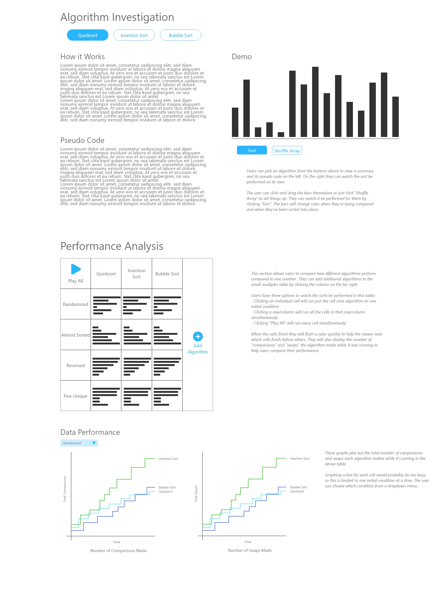
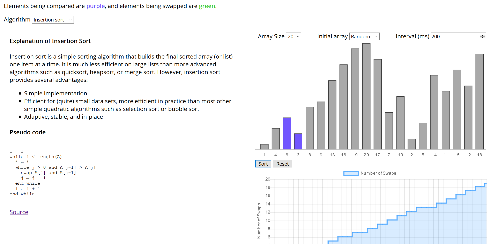
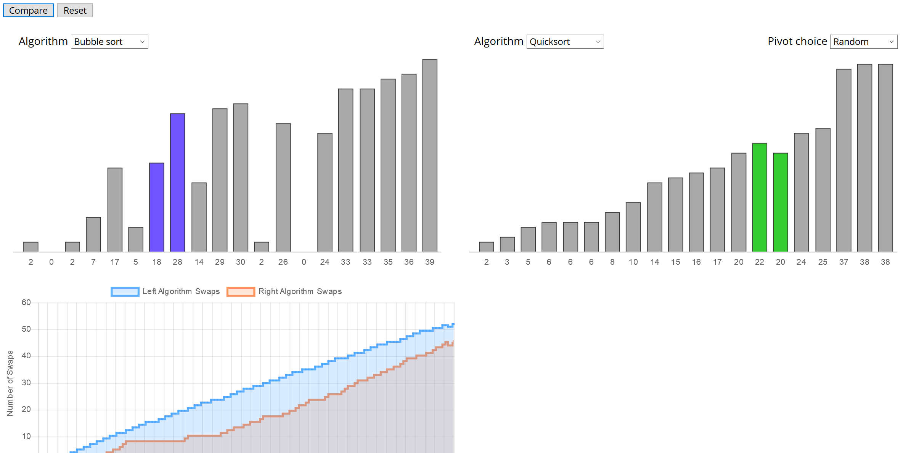

A dashboard to help new computer science students learn the complexities of sorting algorithms.
Dashboard Designer and Developer
Chart.js / Bootstrap
Oct. 2019
Learning sorting algorithms, such as Merge Sort and Quicksort, is something many new computer science students need to accomplish. I wanted to design and build this interactive dashboard to help them better visualize the differences between several popular algorithms to make their studies more engaging.
I used an existing Javascript sorting engine to drive the data processing for this project (see sources), but user interaction was extremely limited in its original implementation. I kept all the logic for sorting and tracking the sort steps, but replaced all the charting and interactive elements using Bootstrap 4 and Chart.js.
Learning Objectives
With the help of this dashboard, students will be able to:
- Compare the performance of different algorithms on different initial conditions.
- Discuss how to implement sorting algorithms, regardless of programming language.
- Identify situations when certain algorithms are ideal or not ideal for sorting.
Sketches and Mockups
three paper sketches
Final Product
Top Section – Algorithm Details
Students can choose an algorithm to read an explanation of how it works and study its pseudo code. On the right they can configure an array and click “Sort” to watch it be performed and watch as the number of swaps the algorithm makes is displayed on the line chart below.
Bottom Section – Compare Algorithm Performance
Students pick two algorithms to compare, then they’re able to watch how they stack up against each other.
How the Dashboard Helps Students
A challenge with learning these sorting algorithms is relating their pseudo code and “Big O” notation to how the array elements are moved by the code. This solution allows students to view the pseudo code of an algorithm alongside a demo of it being performed, and addresses learning objectives 1 and 2.
The two bar charts and line charts at the bottom lets students compare algorithm performance side by side and helps show when one outperforms another, which addresses learning objective 3.
Using bar charts for this sorting visualization is most appropriate because it’s simple to encode size and position, which are literally two data attributes that students are concerned about. The size of a bar encodes the “size” of an element in the array. The position of a bar along the x axis encodes the “position” of an element in the array. Color also encodes which objects are being compared and if they are swapped, because that is key to gaining a better understanding of the algorithms. Pairs of bars will change to purple if they’re being compared and change to green if they are swapped.
This encoding scheme gives the visualizations great expressiveness by showing users the size and position of elements at a given iteration, as well as showing which operations the algorithm is performing. It’s highly effective because the colors help the user follow the algorithms process, and the size and position of elements reflect the current state of the array at any given iteration.